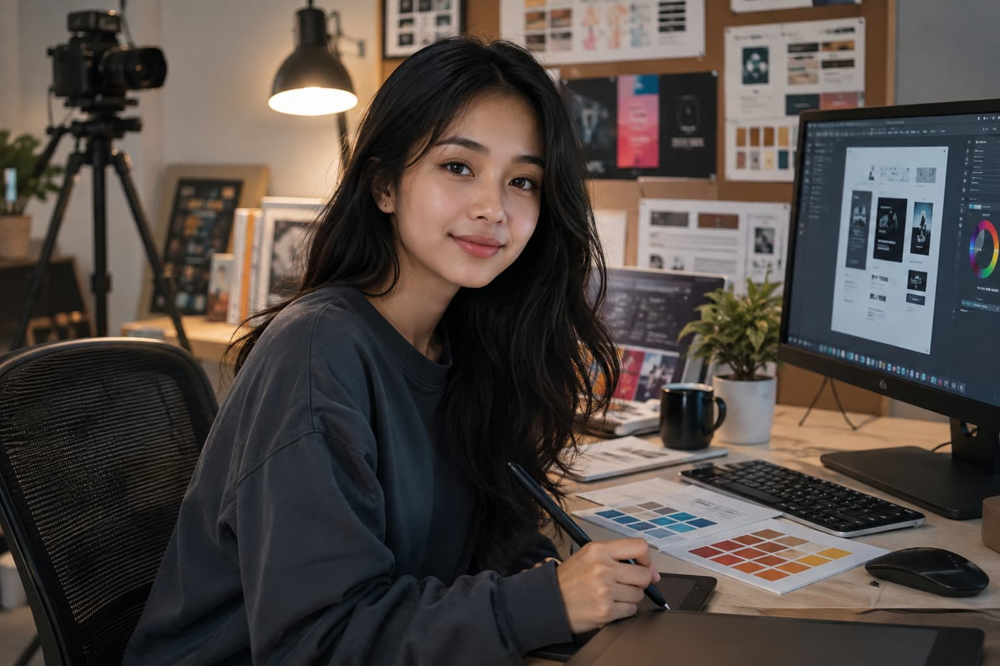

Content creator & desainer grafis lepas dari Yogyakarta. Suka bikin visual yang enak dilihat dan cerita yang gampang nyambung ke orang.

Saya lulusan SMA Negeri 3 Yogyakarta jurusan IPS tahun 2023. Sejak kelas 11 saya mulai belajar desain grafis otodidak lewat YouTube dan komunitas desain online, lalu perlahan mulai menerima proyek kecil dari teman dan UMKM di sekitar rumah. Sekarang saya fokus membantu bisnis kecil dan kreator personal membangun identitas visual yang hangat dan mudah diingat, mulai dari konten media sosial sampai desain kemasan sederhana.
Adobe Photoshop, Canva Pro, dan Adobe Illustrator dasar untuk kebutuhan konten dan promosi.
Menyusun konten Instagram & TikTok yang konsisten dan sesuai karakter brand.
CapCut dan Adobe Premiere Rush untuk video pendek dan reels.
Menulis caption dan naskah singkat yang enak dibaca dan tidak kaku.
Mengerjakan proyek desain dan konten untuk lebih dari 15 UMKM dan kreator lokal di Yogyakarta.
Jurusan IPS, aktif di ekstrakurikuler jurnalistik sekolah dan divisi desain OSIS.
Belajar dasar Photoshop dan Canva melalui tutorial online di sela waktu sekolah.
Konten Instagram & desain menu
Identitas visual & kemasan produk
Feed Instagram & video promosi